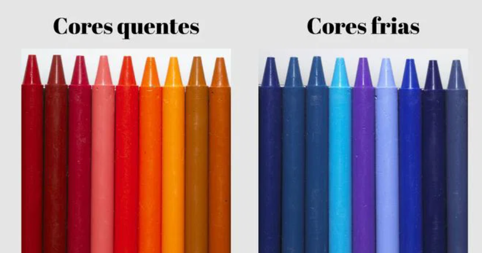
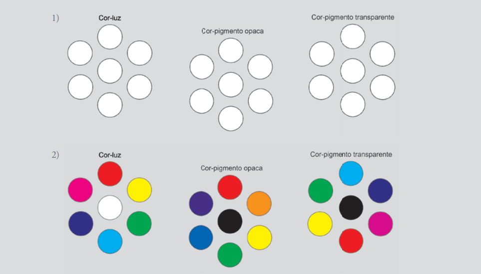

CORES
QUENTES E FRIAS
Explore o universo das cores, suas propriedades físicas, percepção visual e aplicações na arte, design e tecnologia.
Explore o universo das cores, suas propriedades físicas, percepção visual e aplicações na arte, design e tecnologia.

Cores quen tes e frias são utilizadas para denominar a temperatura da cor. Essas tonalidades tendem a produzir a sensação de que as formas se expandem e se aproximam. Cores quentes tendem a nos aproximar enquanto as cores frias tendem a nos afastar. Mais tarde, Newton reduziu as sete cores a seis, sendo três primárias e três secundárias. Como se referia a cores-luz, as primárias são: vermelho (R), verde (G) e azul-violetado (B).
O segundo tipo de Círculo Cromático foi pensado na organização em quatro cores. Antes utilizado por Edwald Hering, este círculo foi também estruturado por Wilhelm Ostwald em 1916. O Círculo Cromático de Ostwald tem forte apelo aos princípios da percepção cromática. Um Círculo Cromático formado por cinco cores principais, a princípio, parece desequilibrado. Ao contrário, com ele, Albert Munsell mostrou cinco cores principais: vermelho, amarelo, verde, azul-violetado e púrpura; distribuídas em um diagrama circular. Pintor da escola romântica alemã, Runge pensou um modelo com a forma de uma esfera parecida com o globo terrestre. O polo norte corresponde ao branco e o polo sul ao preto. O equador corresponde ao círculo de matizes puros ou saturados: vermelho, violeta, azul, verde, amarelo e laranja.

ATIVIDADE CÍRCULO CROMÁTICO EM COR-PIGMENTO TRANSPARENTE Objetivo: construir um instrumento para se
pensar os esquemas de combinações de cores possíveis, um Círculo Cromático. Será a partir das
cores-pigmento transparentes, pois são as cores que se consegue em tinta. Material: folha para
guache, tintas guache nas cores magenta, ciano, amarelo e preto. Descrição: desenhar um círculo com
doze cores, primárias, secundárias e terciárias em cores- -pigmento transparentes, dispostas segundo
a teoria.
Na arte aprendemos vermelho, azul e amarelo, mas em telas e tecnologia as cores primárias são diferentes
Quando misturamos luzes coloridas primárias (RGB), o resultado tende ao branco.
Vermelho costuma transmitir energia e urgência, azul passa confiança e calma, e amarelo chama atenção rapidamente.
MANDALAS COLORIDAS EM ESQUEMAS DE COMBINAÇÕES
Objetivo: aprender a manipular o Círculo Cromático nos esquemas de combinações de cores e
gerar exemplos materializados de cada um deles em todas as possibilidades.
Material: mandalas para pintar, lápis de cor.
Descrição: pintar mandalas prontas (ou desenhá-las), de acordo com cada Esquema de
Combinações de Cores, em todas as possibilidades. Por exemplo, pintar várias mandalas com três
cores análogas no círculo.
